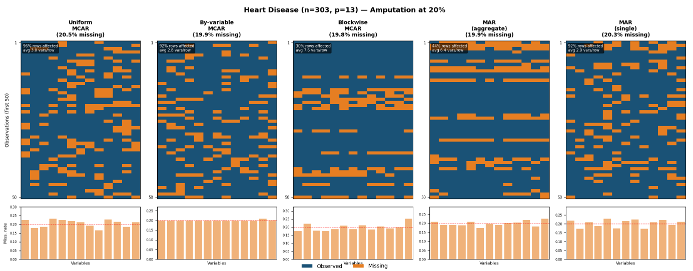
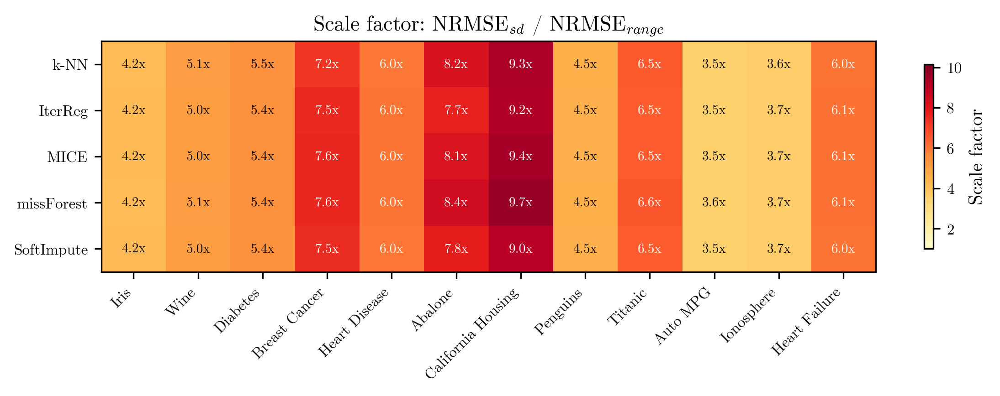
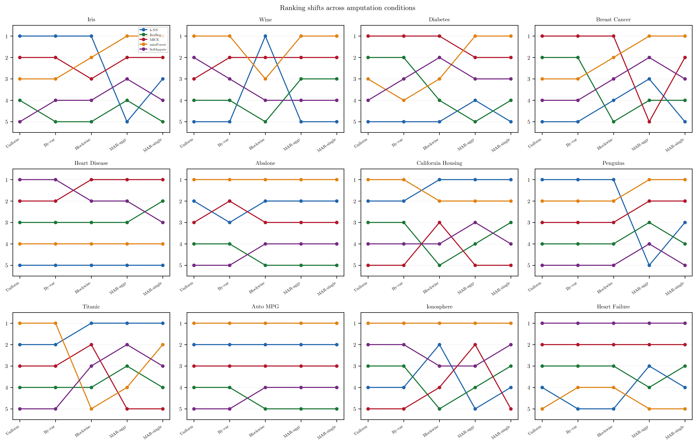
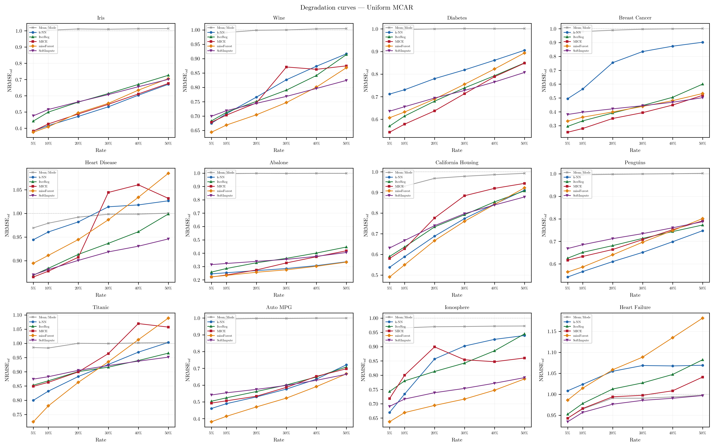

A sensitivity analysis of reporting choices in missing-data imputation benchmarks.
Imputation methods are almost always compared on simulated benchmarks: complete data are corrupted, reconstructed, and scored against the truth. What rarely gets stated is that the score depends on a string of protocol decisions that have nothing to do with the imputation itself. We separate these decisions into two kinds. Some change the number a benchmark computes — which NRMSE denominator is used, whether error is measured on the imputed cells or the whole matrix, how per-variable errors are averaged. Others change the problem the method is asked to solve — how the data are made incomplete, under which mechanism, at what rate, on which datasets.
Running six methods across twelve datasets, varying one dimension at a time, we show that both kinds bite. The same missForest reconstruction of California Housing reads as 0.069 or 0.667 depending only on the denominator. Scoring on the full matrix instead of the imputed cells shrinks every gap between methods by a fixed factor of √p. Moving from MCAR to a logistic MAR mechanism changes the best-performing method on seven of the twelve datasets, although the methods themselves are unchanged. Under plain uniform MCAR, by contrast, the competitive methods were statistically indistinguishable (Friedman p = 0.147), so which one appears best depends largely on the datasets chosen. And on a dataset whose variables are almost uncorrelated, no competitive method improved on simple mean imputation.
We close with two reporting frameworks grounded in these findings — a small comparability core that lets results from different studies be read against each other, and a fuller protocol for what a benchmark might document — offered as pragmatic recommendations for the reconstruction-based paradigm we examine rather than as universal rules.

Uniform, by-variable, and blockwise amputation illustrated on an 8-variable, 20-observation matrix at 20% missingness. Studies using the label “MCAR” may implement any of these variants, yet the distinction is almost never reported.
↓ fig1_amputation.png
The ratio NRMSEsd / NRMSErange (computed for missForest under 20% MCAR) ranges from 3.6 (Auto MPG) to 9.7 (California Housing). Two studies using different denominators are computing genuinely different quantities.
↓ fig2_scale_factor.png
Method rankings traced across the five amputation conditions for each dataset. missForest improves under MAR; IterReg worsens most sharply. The Friedman test among competitive methods shifts from non-significant (p = 0.147) under MCAR to significant (p = 0.031) under MAR-aggregate.
↓ fig3_rank_change.png
All methods converge toward NRMSEsd ≈ 1.0 at high rates. SoftImpute overtakes at 40–50% on six datasets; Heart Failure converges from above (methods worse than baseline); on Penguins, k-NN leads at every rate.
↓ fig4_degradation.pngpip install -r requirements.txt
Python 3.12. All twelve datasets load automatically from scikit-learn, seaborn and UCI — no manual downloads.
python nb_master_compute.py
Writes one JSON checkpoint per condition to results/. Each is saved as it completes, so the run can be interrupted and resumed.
load_all_results()
Fixed seeds (base 42) and a shared amputation mask per replicate make results reproducible. Full sweep ≈ 8–12 h on a modern machine.
{kind=link}
{kind=link}
{kind=link}
{kind=link}